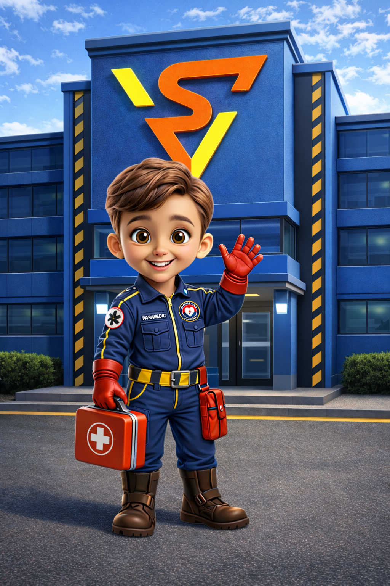
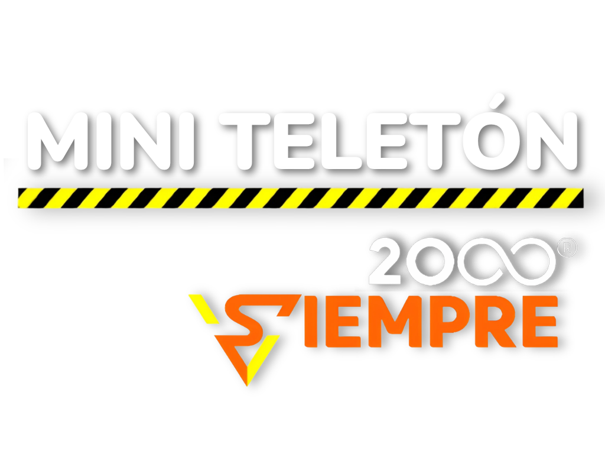

QUÉ BUENO TENERTE AQUÍ
Pequeñas acciones.
Grandes conexiones.
Un espacio para aprender, compartir y estar más cerca.
Elige lo que quieres descubrir hoy.

APRENDEMOS JUNTOSComunidad preparada,
vida asegurada.
Acompaña a Ciro y descubre el valor de estar preparados.
Ver el video
JUNTOS, SIEMPRE.Pequeños gestos.
Mucho corazón.
Descubre el espacio de Mini Teletón y su galería de momentos.
Conocer Mini TeletónDos espacios. Una misma forma de conectar.
01 / COMUNIDAD
Comunidad preparada,
vida asegurada.
Aprendamos juntos con Ciro.
UN MENSAJE DE CIRO
La preparación
hace la diferencia.
¿Sabes qué hacer en una emergencia? 🚨 En este video, Ciro nos recuerda que ante un paro cardíaco o una hemorragia severa, actuar rápido puede salvar una vida. Aprende los pasos básicos: llama al 911, inicia RCP y controla el sangrado. Las emergencias no avisan, por eso la preparación es clave. Comunidad preparada, vida asegurada. 💙
También puedes conocer Mini Teletón ↗APRENDER PARA CUIDARNOS
Capacitaciones anteriores
Un recorrido por los talleres que hemos compartido con comunidades e instituciones.
Selecciona un encuentro para abrir su galería.
02 / UN ESPACIO PARA COMPARTIR
Mini Teletón
Pequeños gestos que nos acercan.
NUESTRA GALERÍA
Momentos para compartir
Próximamente: las fotografías de Mini Teletón.